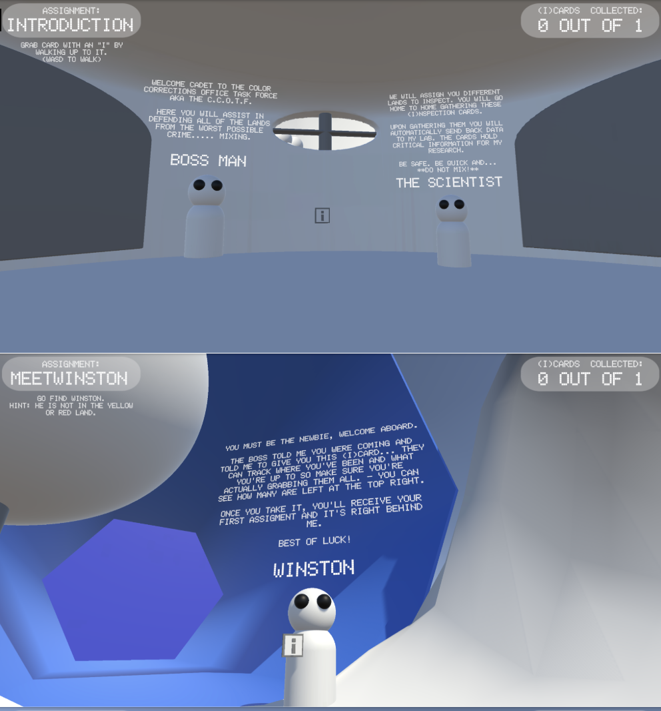
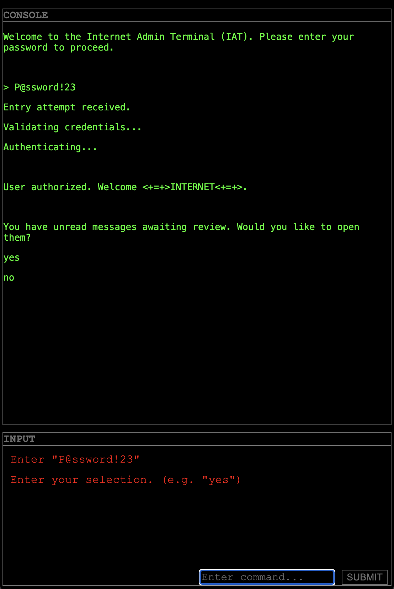
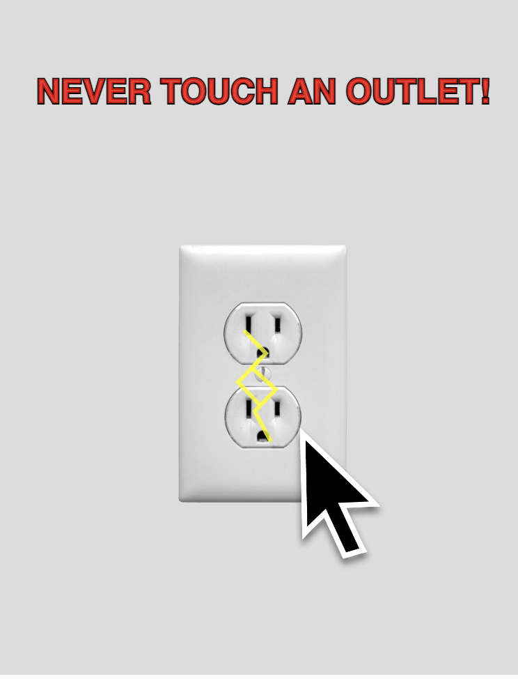
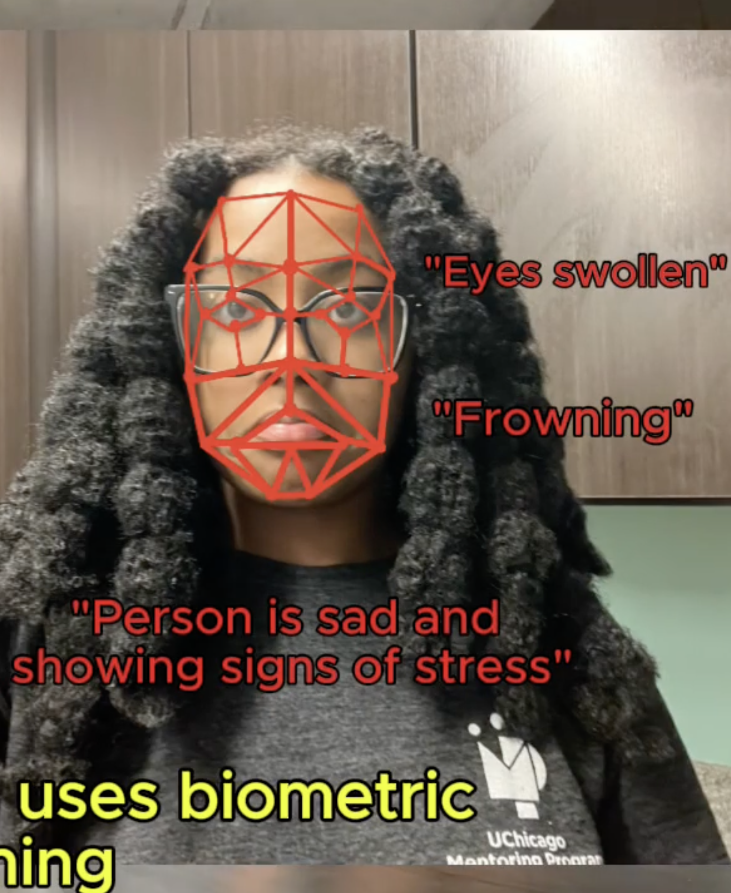

Hi! It's Natalyah. :)
Welcome to V1 of my website!
Feel free to explore to learn more about my professional experience, pending projects, and personal interests.
Don't forget to connect with me on LinkedIn.
Bye for now. :)
I am an incoming full-time Software Engineer at JPMorganChase hoping to specialize in UI/UX design.
As an alumni of University of Chicago with a Bachelors of Science in Computer Science, I have a huge passion for all things emerging technology. I love working on creative technical projects and considering not only functionality but also usability and artistic design choice.
I have worked with various different startups (both nationally and internationally) in the FinTech space, and in the education and career preparation fields.
I love working with and uplifting younger generations and love any and all opportunities to provide mentorship and support the growth of the next generation of technologists (especially my fellow young black women.)
"The Outcast" was built as a final project for UChicago's Art Games course.
The Outcast is a first person game where the player is launched into the "Hub" the home of the central authority of the Colorlands and key place in society for law, governance, and research. Through different tasks, the player slowly learns the hidden secret of the Colorlands and the true danger behind the colors mixing.
The game is entirely built using Unity and all landscaping, modeling, scripting, and storywriting were completed by me.
Click below to play the published version of the game on Unity's website!

"Letter to the Internet" was built as a project for UChicago's Internet Art course.
For this project, I was tasked with creating a pure CSS and HTML one-page website to convey my "message to the internet."
Through unique integrations of CSS animation, I was able to curate my vision of having the user log in through the "terminal" as the Internet and discover their "awaiting message."
Feel free to play through this gamified HTML and CSS experience and discover the message yourself. :)

"The Shocking Cursor" was built as a project for UChicago's Designing Interaction Course.
For this project, I was tasked with creating a Pseudo-Haptic Mouse Sensation inspired by the Visual Haptics work of Prof Keita Watanabe's Lab.
While the user is not actually being shocked, by the just moving their mouse the application induces the experience of a shocking sensation through a false mouse overlay, visual, and auditory cues.
You can experience, edit, and build upon this project by opening the P5 sketch below.

"CommuniCap" was filmed and edited as a project for UChicago's Designing Interaction Course.
For this project, I was tasked with designing a "hat/cap that helps people commuicate".
CommuniCap was the resulting device concept in which a user can wear a hat that detects another person's emotions using visual and audible cues and combines these emotional assessments with conversation summaries to provide advice for how to reply effectively.
**CommuniCap is NOT a real device. All videos were filmed and edited by myself.
To watch the CommuniCap video prototype on youtube, click the button below. :)

"REaLiTY" was generated as a final project for UChicago's A.I. and Video Course.
For this project, I was tasked with creating an A.I. generated film on my choice of subject matter. The video and audio clips within REaLiTY were generated using various different A.I. image and video generation tools and edited by myself.
The film is meant to serve as a commentary on the socially destructive and psychologically damaging effects of using artificial intelligence and popularizing agentic tools to replace human workers and alter human experiences.
You can view REaLiTY on youtube by clicking the button below.
My professional opportunities have ranged from software development to mentorship to education. Look below to learn more about my experiences, skills, and projects.
My career journey started at 16 when I worked for a local Code Ninjas branch teaching video game development to students age 3 to 14.
I then transitioned to a position at the University of Chicago's IT Services working as a student tech in the networking division.
During my second year in university I worked as a Career Peer Advisor in the University of Chicago's Career advancement department where I aided students in resume development and career planning.
Click HERE to view my linkedin and feel free to connect! :)
I am currently starting a new full-time SWE role at JPMorganChase and I am looking for undergraduates to mentor!
Click HERE to download a pdf version of my resume. :)
I love developing new apps and coming up with creative ways to bring a company or teams vision to life.
My git hub is currently [ UNDER CONSTRUCTION ] but feel free to read about my interests and explore the projects above!
I love working with code and software in playful and creative ways. Recently, I have begun exploring 3D and interactive media and love producing works that combine user exploration with art.